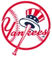

Historical player · P
Tim Leary
- Position
- P
- Bats/Throws
- R/R
- Height/Weight
- 6'3", 205 lb
- Born
- Dec 23, 1958 in Santa Monica, CA
- Major-league seasons
- 1981–1994 (13)
- Main franchise
 Los Angeles Dodgers
Los Angeles Dodgers- Status
- Retired
| Year | Team | Lg | G | PA | AB | R | H | 2B | 3B | HR | RBI | SB | CS | BB | K | AVG | OBP | SLG | OPS | WAR |
|---|---|---|---|---|---|---|---|---|---|---|---|---|---|---|---|---|---|---|---|---|
| 1981 |  New York Mets New York Mets | NL | 1 | 1 | 1 | 0 | 0 | 0 | 0 | 0 | 0 | 0 | 0 | 0 | 0 | .000 | .000 | .000 | .000 | 0.0 |
| 1983 | New York Mets | NL | 2 | 3 | 3 | 0 | 1 | 0 | 0 | 0 | 0 | 0 | 0 | 0 | 1 | .333 | .333 | .333 | .667 | 0.0 |
| 1984 | New York Mets | NL | 20 | 13 | 10 | 2 | 3 | 0 | 0 | 1 | 1 | 1 | 0 | 0 | 2 | .300 | .300 | .600 | .900 | 0.1 |
| 1987 | Los Angeles Dodgers | NL | 39 | 26 | 23 | 1 | 7 | 1 | 0 | 0 | 5 | 0 | 0 | 0 | 5 | .304 | .304 | .348 | .652 | -0.1 |
| 1988 | Los Angeles Dodgers | NL | 36 | 83 | 67 | 4 | 18 | 3 | 0 | 0 | 9 | 0 | 1 | 1 | 26 | .269 | .286 | .313 | .599 | -0.3 |
| 1989 | Los Angeles Dodgers | NL | 19 | 39 | 33 | 1 | 2 | 0 | 0 | 0 | 0 | 0 | 0 | 0 | 14 | .061 | .061 | .061 | .121 | -0.7 |
| 1989 |  Cincinnati Reds Cincinnati Reds | NL | 14 | 33 | 26 | 1 | 5 | 2 | 0 | 0 | 4 | 0 | 0 | 4 | 9 | .192 | .300 | .269 | .569 | -0.1 |
| 1989 total | 33 | 72 | 59 | 2 | 7 | 2 | 0 | 0 | 4 | 0 | 0 | 4 | 23 | .119 | .175 | .153 | .327 | -0.8 | ||
| Career | 6 seasons | 131 | 198 | 163 | 9 | 36 | 6 | 0 | 1 | 19 | 1 | 1 | 5 | 57 | .221 | .247 | .276 | .523 | -1.1 |
| Year | Team | Lg | G | GS | W | L | SV | CG | SHO | IP | H | ER | BB | K | HR | ERA | WHIP | K/9 | WAR |
|---|---|---|---|---|---|---|---|---|---|---|---|---|---|---|---|---|---|---|---|
| 1981 | New York Mets | NL | 1 | 1 | 0 | 0 | 0 | 0 | 0 | 2.0 | 0 | 0 | 1 | 3 | 0 | 0.00 | 0.50 | 13.5 | 0.1 |
| 1983 | New York Mets | NL | 2 | 2 | 1 | 1 | 0 | 1 | 0 | 10.2 | 15 | 4 | 4 | 9 | 0 | 3.38 | 1.78 | 7.6 | 0.4 |
| 1984 | New York Mets | NL | 20 | 7 | 3 | 3 | 0 | 0 | 0 | 53.2 | 61 | 24 | 18 | 29 | 2 | 4.02 | 1.47 | 4.9 | 0.8 |
| 1985 |  Milwaukee Brewers Milwaukee Brewers | AL | 5 | 5 | 1 | 4 | 0 | 0 | 0 | 33.1 | 40 | 15 | 8 | 29 | 5 | 4.05 | 1.44 | 7.8 | 0.6 |
| 1986 | Milwaukee Brewers | AL | 33 | 30 | 12 | 12 | 0 | 3 | 2 | 188.1 | 216 | 88 | 53 | 110 | 20 | 4.21 | 1.43 | 5.3 | 3.0 |
| 1987 | Los Angeles Dodgers | NL | 39 | 12 | 3 | 11 | 1 | 0 | 0 | 107.2 | 121 | 57 | 36 | 61 | 15 | 4.76 | 1.46 | 5.1 | 0.4 |
| 1988 | Los Angeles Dodgers | NL | 35 | 34 | 17 | 11 | 0 | 9 | 6 | 228.2 | 201 | 74 | 56 | 180 | 13 | 2.91 | 1.12 | 7.1 | 5.6 |
| 1989 | Los Angeles Dodgers | NL | 19 | 17 | 6 | 7 | 0 | 2 | 0 | 117.1 | 107 | 44 | 37 | 59 | 9 | 3.38 | 1.23 | 4.5 | 1.5 |
| 1989 | Cincinnati Reds | NL | 14 | 14 | 2 | 7 | 0 | 0 | 0 | 89.2 | 98 | 37 | 31 | 64 | 8 | 3.71 | 1.44 | 6.4 | 1.4 |
| 1989 total | 33 | 31 | 8 | 14 | 0 | 2 | 0 | 207.0 | 205 | 81 | 68 | 123 | 17 | 3.52 | 1.32 | 5.3 | 2.9 | ||
| 1990 |  New York Yankees | AL | 31 | 31 | 9 | 19 | 0 | 6 | 1 | 208.0 | 202 | 95 | 78 | 138 | 18 | 4.11 | 1.35 | 6.0 | 2.8 |
| 1991 | New York Yankees | AL | 28 | 18 | 4 | 10 | 0 | 1 | 0 | 120.2 | 150 | 87 | 57 | 83 | 20 | 6.49 | 1.72 | 6.2 | -0.2 |
| 1992 | New York Yankees | AL | 18 | 15 | 5 | 6 | 0 | 2 | 0 | 97.0 | 84 | 60 | 57 | 34 | 9 | 5.57 | 1.45 | 3.2 | -0.2 |
| 1992 |  Seattle Mariners Seattle Mariners | AL | 8 | 8 | 3 | 4 | 0 | 1 | 0 | 44.0 | 47 | 24 | 30 | 12 | 3 | 4.91 | 1.75 | 2.5 | -0.2 |
| 1992 total | 26 | 23 | 8 | 10 | 0 | 3 | 0 | 141.0 | 131 | 84 | 87 | 46 | 12 | 5.36 | 1.55 | 2.9 | -0.4 | ||
| 1993 | Seattle Mariners | AL | 33 | 27 | 11 | 9 | 0 | 0 | 0 | 169.1 | 202 | 95 | 58 | 68 | 21 | 5.05 | 1.54 | 3.6 | 0.9 |
| 1994 |  Texas Rangers Texas Rangers | AL | 6 | 3 | 1 | 1 | 0 | 0 | 0 | 21.0 | 26 | 19 | 11 | 9 | 4 | 8.14 | 1.76 | 3.9 | -0.1 |
| Career | 13 seasons | 292 | 224 | 78 | 105 | 1 | 25 | 9 | 1491.1 | 1570 | 723 | 535 | 888 | 147 | 4.36 | 1.41 | 5.4 | 16.7 |
| Year | Team | Pos | G | GS | Inn | TC | PO | A | E | DP | Fld% |
|---|---|---|---|---|---|---|---|---|---|---|---|
| 1981 | New York Mets | P | 1 | 1 | 2.0 | 0 | 0 | 0 | 0 | 0 | - |
| 1983 | New York Mets | P | 2 | 2 | 10.2 | 4 | 1 | 3 | 0 | 0 | 1.000 |
| 1984 | New York Mets | P | 20 | 7 | 53.2 | 8 | 3 | 4 | 1 | 0 | .875 |
| 1985 | Milwaukee Brewers | P | 5 | 5 | 33.1 | 8 | 1 | 7 | 0 | 0 | 1.000 |
| 1986 | Milwaukee Brewers | P | 33 | 30 | 188.1 | 49 | 22 | 26 | 1 | 1 | .980 |
| 1987 | Los Angeles Dodgers | P | 39 | 12 | 107.2 | 27 | 9 | 18 | 0 | 2 | 1.000 |
| 1988 | Los Angeles Dodgers | P | 35 | 34 | 228.2 | 59 | 24 | 34 | 1 | 4 | .983 |
| 1989 | Cincinnati Reds | P | 14 | 14 | 89.2 | 20 | 4 | 15 | 1 | 0 | .950 |
| 1989 | Los Angeles Dodgers | P | 19 | 17 | 117.1 | 33 | 16 | 16 | 1 | 2 | .970 |
| 1990 | New York Yankees | P | 31 | 31 | 208.0 | 54 | 14 | 36 | 4 | 4 | .926 |
| 1991 | New York Yankees | P | 28 | 18 | 120.2 | 22 | 9 | 12 | 1 | 3 | .955 |
| 1992 | New York Yankees | P | 18 | 15 | 97.0 | 17 | 7 | 10 | 0 | 1 | 1.000 |
| 1992 | Seattle Mariners | P | 8 | 8 | 44.0 | 11 | 3 | 8 | 0 | 2 | 1.000 |
| 1993 | Seattle Mariners | P | 33 | 27 | 169.1 | 42 | 14 | 28 | 0 | 3 | 1.000 |
| 1994 | Texas Rangers | P | 6 | 3 | 21.0 | 7 | 3 | 4 | 0 | 0 | 1.000 |
| Career | P | 292 | 224 | 1491.1 | 361 | 130 | 221 | 10 | 22 | .972 |
Awards
- 1988 National Silver Slugger (P)
League-leader finishes top 10; 0 times first
Seasons before 2002 are real MLB history from the OOTP export, mapped by OOTP onto this league's 30 original franchises (club names are as they were in that season). 2002 is this universe. Player names are as the export stores them (apart from a few Alexander has renamed in his game since this dump, such as Babe Ruth): OOTP gives some historical players generated names (the 586-homer career is filed under “Legendre Robinson”), and the site keeps them. Every player links to a page: 2002 players to their season pages, everyone else to a historical career page.